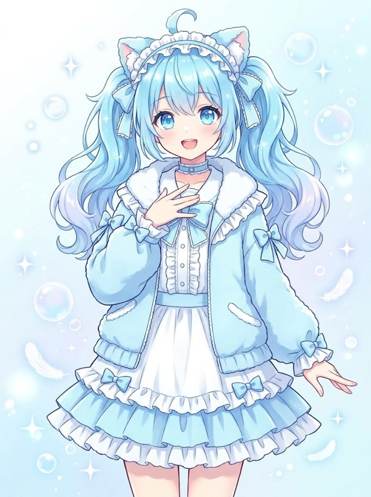
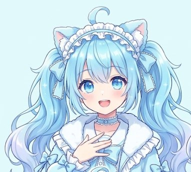

星見アクアの
配信どうぶつ
配信どうぶつ
診断
12の質問で、あなたに合う配信スタイルを16タイプの動物で診断するよ。

4つの軸でタイプが決まるよ
届け方声で届ける姿も見せる
話し方話し手聞き手
ペースコツコツイベント
原動力つながり表現
全16タイプ
タップで中身が見られるよ配信どうぶつ診断｜Palmu専属ライバー事務所 Utip
1 / 12

あなたは…
おすすめの配信スタイル
最初の30日の作戦
コラボすると相性ばつぐん
結果をLINEで送ってね
あなたのタイプに合った始め方を、アクアが一緒に考えるよ。下の文をコピーしてから「公式LINEをひらく」を押して、トークに貼りつけて送ってね。
ボタンがひらかないときは、プロフィールのリンクから公式LINEを追加してね。
スクショしてストーリーズにのせてね ＃配信どうぶつ診断